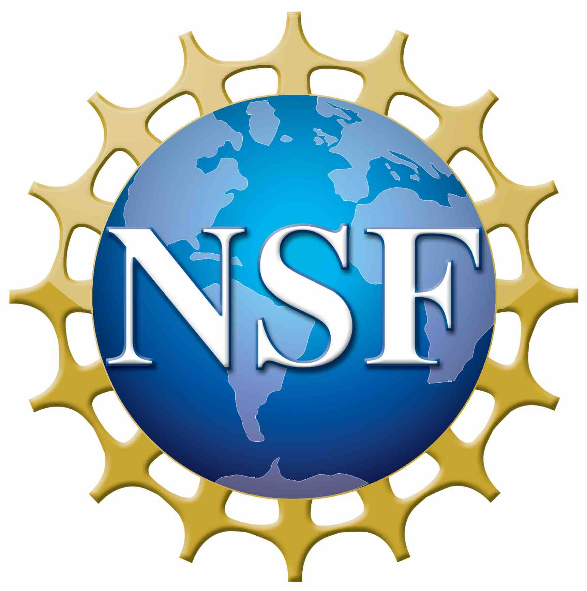
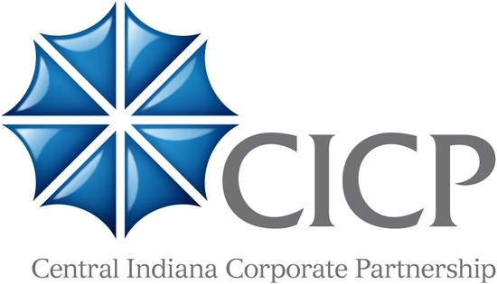

I'm an Associate Professor in the Department of Computer Science and Engineering at the University of Notre Dame. My research fields are data mining, machine learning, and natural language processing. My data science research focuses on graph and text data for applications such as material discovery, recommender system, question answering, education, and mental health. [C.V.]
My recent projects focus on knowledge-augmented NLP, auto-instruct LLM, self-correct LLM, personalized LLM, harm-unlearned LLM, graph neural networks, graph data augmentation, and graph diffusion model.
I am directing the Data Mining towards Decision Making (DM2) Lab, supported by National Science Foundation (NSF), National Institutes of Health (NIH), Office of Naval Research (ONR), and Amazon.
What's New
- September 2024: Graph Diffusion Transformer (Graph DiT) (led by Gang) was accepted to NeurIPS!
- September 2024: "Personalized PEFT" and "Collaborative PEFT" (led by Zhaoxuan), "Reflection Augmentation" (led by Zhihan), "Self-correct LLM" (led by Zhenyu), "Reference-free QG Evaluation" (led by Bang), and "Complex Instruction-following" (led by Noah) were accepted to EMNLP!
- July 2024: "LLM for Taxonomy Induction" (led by Qingkai) was accepted to CIKM!
- May 2024: "Cross-Lingual Instruction Tuning" (led by Zhihan) and "Machine Unlearning for LLM Safety" (led by Frank) were accepted to ACL!
- March 2024: "Identify and Ignore Irrelevant Conditions" [project] and "VLM for Open-Set Object Navigation" [project] were accepted to NAACL!
- February 2024: We are organizing the Third Workshop on Knowledge Augmented Methods for NLP (KnowledgeNLP) at ACL in Bangkok in August. Please submit your amazing work!
- January 2024: Awarded a CBET grant from NSF to work on AI for (polymer) material discovery! We are excited to continue working with Prof. Luo and his MONSTER lab. Thank you, NSF!
- December 2023: "Get an A in Math" [project] was accepted to AAAI!
- November 2023: IfQA (led by Wenhao) was selected for Outstanding Paper Award in EMNLP!
Latest Publications
- Graph Diffusion Transformer for Multi-Conditional Molecular Generation, NeurIPS, 2024.
- Large Language Models Can Self-Correct with Key Condition Verification, EMNLP, 2024.
- Personalized Pieces: Efficient Personalized Large Language Models through Collaborative Efforts, EMNLP, 2024.
- Democratizing Large Language Models via Personalized Parameter-Efficient Fine-tuning, EMNLP, 2024.
- Learn Beyond The Answer: Training Language Models with Reflection for Mathematical Reasoning, EMNLP, 2024.
- Reference-based Metrics Disprove Themselves in Question Generation, Findings of EMNLP, 2024.
- TOWER: Tree Organized Weighting for Evaluating Complex Instructions, Findings of EMNLP, 2024.
- Chain-of-Layer: Iteratively Prompting Large Language Models for Taxonomy Induction from Limited Examples, CIKM, 2024.
- PLUG: Leveraging Pivot Language in Cross-Lingual Instruction Tuning, ACL, 2024.
- Towards Safer Large Language Models through Machine Unlearning, Findings of ACL, 2024.
- Instructing Large Language Models to Identify and Ignore Irrelevant Conditions, NAACL, 2024. [project]
- OpenFMNav: Towards Open-Set Zero-Shot Object Navigation via Vision-Language Foundation Models, Findings of NAACL, 2024. [project]
- Get an A in Math: Progressive Rectification Prompting, AAAI, 2024. [project]
- Pre-training Language Models for Comparative Reasoning, EMNLP, 2023.
- IfQA: A Dataset for Open-domain Question Answering under Counterfactual Presuppositions, EMNLP, 2023. (Outstanding Paper Award)
- Auto-Instruct: Automatic Instruction Generation and Ranking for Black-Box Language Models, Findings of EMNLP, 2023.
- Data-Centric Learning from Unlabeled Graphs with Diffusion Model, NeurIPS, 2023.
- Generate rather than Retrieve: Large Language Models are Strong Context Generators, ICLR, 2023.
Advised PhD Dissertations
- Daheng Wang: Learning Complementarity and Dynamics for Contextual Behavior Modeling (2021)
- Tong Zhao: Learning to Augment Data in Graphs (2022)
- Wenhao Yu: Knowledge Augmented Methods for NLP and Beyond (2023)
Past Talks and Abstracts
- Effective and Efficient Knowledge-Intensive NLP (2023) [abstract]: cover RACo (EMNLP 2022), GenRead (ICLR 2023), and EDMem (EMNLP 2022).
- Data Augmentation for Graph Regression (2023) [abstract]: cover GREA (KDD 2022), SGIR (KDD 2023), and DCT (NeurIPS 2023).
- Enhancing Language Generation with Knowledge Graphs (2022) [abstract]: cover FASum (NAACL 2021), MoKGE (ACL 2022), and EDMem (EMNLP 2022).
- Novel Methods that Learn to Augment Graph Data (2021) [abstract]: cover GAug (AAAI 2021), Eland (CIKM 2021), CFLP (ICML 2022), and GREA (KDD 2022).
- Structured Knowledge is Still Essential to Understand Sciences (2020) [abstract]: cover SciKG (KDD 2019), MIMO (EMNLP 2019), Tablepedia (WWW 2020), TCN (WWW 2021), and GenTaxo (KDD 2021).
- Graph Learning for Behavior Modeling (2020): cover TUBE (KDD 2019), M2TUBE (TNNLS 2022), CalendarGNN (KDD 2020), CoEvoGNN (DLG 2020 Best Paper / TKDE 2021), GAL (CIKM 2021), and PamFul (TNNLS 2021), including user profiling, recommendation, and fraud detection.
|  |

|
 |

|

|
Last updated on October 14, 2024.